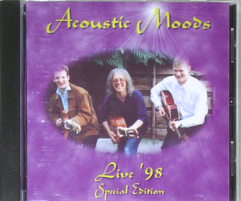

| £10 |
 |
Samples
Beverley's Falling Snowflakes
(468KB)
2 Dances (468KB)
|
Disc 1
1. No Son of Mine (Genesis)
2. Afterglow (Genesis)
3. Beverley's Falling Snowflakes (Ward)
4. A Regal Medley (Queen)
i. Bohemian Rhapsody
ii. Who Wants To Live Forever
iii. We Are the Champions
iv. Crazy Little Thing Called Love
5. Journey's End (Dumigan/Ward)
6. 2 Dances (Dumigan)
i. Kyle's Dance
ii. Alexander's Dance
7. Cuckoo Cocoon (Genesis)
8. Congo (Genesis)
9. Time in a bottle (Croce)
10. Entangled (Genesis)
11. Tryptych (Dumigan)
i. Dancing
ii. Dreaming
iii. Driving
Disc 2
1. Squonk (Genesis)
2. The Les Miserables Suite (Schönberg/Kretzmer)
- Work Song
- At the End of the Day
- I Dreamed A Dream
- Come to Me
- Castle on a Cloud
- Master of the House
- On My Own
- Bring Him Home
- Do You Hear the People Sing?
3. BBC GMR Interview, (The Lee Stone Show)
Friday 13th October 2000
Includes "No Son of Mine" (Genesis)
|